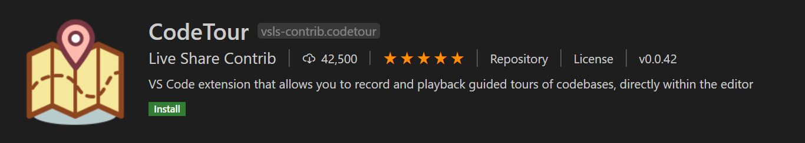
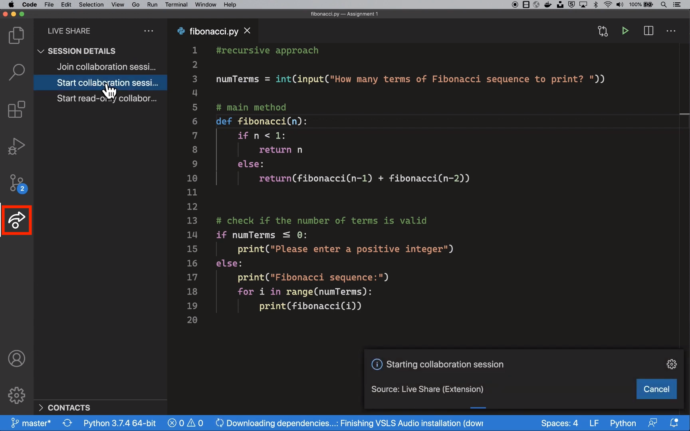
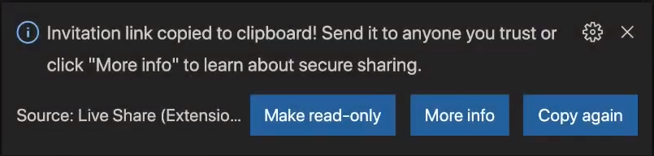
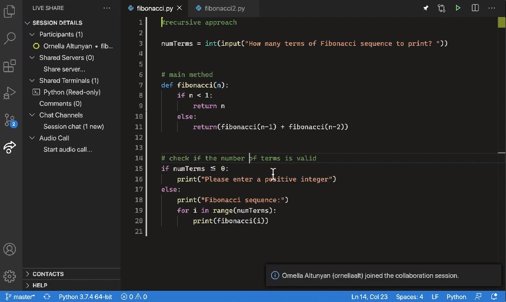
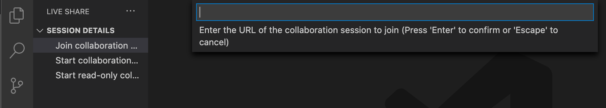

面向教育工作者和学生的 VS Code
欢迎来到作为教育工作者或学生使用 Visual Studio Code 的世界！在本文中，我们将为您介绍各种工具、扩展包和学习路径，帮助您开始在 Visual Studio Code 中进行编码。无论您是寻找资源来增强课堂体验的教育工作者，还是渴望学习和探索编码的学生，本指南都将帮助您入门。
教育资源
以下资源可以帮助您在课堂中开始使用 Visual Studio Code：
编码与扩展包
安装所有不同的软件组件以准备编码可能会令人沮丧。这包括编辑器/IDE、运行时和编译器、包或库，以及每个组件的不同版本。我们为您准备了编码和扩展包，可以帮助加速您的设置。
- Java 编码包：Windows / macOS
- Node.js 和 JavaScript 教育扩展包
- Python 教育扩展包
CodeTour
帮助学生理解新的代码库可能既困难又耗时。创建足够详细的说明可能很繁琐，而且对于学生来说仍然不容易遵循。CodeTour 可以帮助您以流畅和互动的方式向学生介绍您的作业和项目。
CodeTour 是一个 Visual Studio Code 扩展，使您能够创建贯穿代码库的分步指南。此功能在课堂中非常有用，可以将您的作业分解为供学生遵循的步骤，或者通过指向作业中的相关部分来让他们熟悉作业的所有部分。
以下短片展示了一名正在使用 CodeTour 开始开发其应用程序的学生：

实际上，"代码导览"是一系列交互步骤，每个步骤都与特定的目录或文件/行相关联，并包含相应代码的描述。导览既可以签入到仓库中以便通过源代码控制共享，也可以导出为"导览文件"，使任何人都可以重播相同的导览，而无需克隆任何代码！
在以下视频中，一位讲师正在删除嵌入在源代码中的现有说明，并将其替换为 CodeTour 步骤。然后，学生可以在大型游戏开发项目中从一个步骤跳转到另一个步骤。

CodeTour 入门
要开始使用 CodeTour，您需要从 VS Code 市场 下载 CodeTour 扩展。

要在课堂中有效地使用 CodeTour，我们建议遵循 CodeTour 仓库 中的指南。
学生资源
VS Code 入门课程
| 标题 | 描述 | ||
|---|---|---|---|
| ------- | ------------- | ||
| 设置 Python 初学者开发环境 | 通过安装和配置构建真实应用程序所需的工具，开始学习 Python。 | ||
| 使用 Git 版本控制工具 | 利用 Visual Studio Code 与 Git 源代码控制管理系统的紧密集成。 | ||
| 在 Notebook 中编写基础 Python | 通过在 Visual Studio Code 中使用 Notebook 学习 Python 基础知识。 | ||
| 为 Azure Cosmos DB 构建 Node.js 应用 | 使用 Visual Studio Code 和 Node.js 构建一个数据库应用来存储和查询 Azure Cosmos DB 中的数据。 |
通过 NASA 启发课程学习 Python
本学习路径通过受美国国家航空航天局 (NASA) 科学家启发的模块，带您进入 Python 的世界，为您的太空探索职业生涯做好准备。请访问 Microsoft Learn 培训 获取完整的模块列表。
通过这些模块，您将：
- 了解并安装学习编程所需的工具
- 学习核心编程概念并将其应用于真实的 NASA 问题
- 获取关于机器学习和人工智能等尖端技术的知识
- 观看真实的 NASA 员工谈论他们的工作并提供建议
标题 描述 ------- ------------- 探索 Python 在太空探索中的作用 了解 Python 和数据科学如何在 NASA 创造的创新解决方案中发挥作用。 使用人工智能对太空岩石进行分类 创建一个能够对照片中存在的太空岩石类型进行分类的 AI 模型。 使用机器学习预测火箭发射 本模块带您进入机器学习的世界，并帮助您构建一个基本的 ML 模型。 通过《飞奔去月球》学习 Python
尝试这些以太空旅行为主题的挑战，使用 Python、Visual Studio Code 和 Azure 等工具，带您了解数据科学、机器学习和人工智能。
| 标题 | 描述 | ||
|---|---|---|---|
| ------- | ------------- | ||
| 使用 Python 和 Visual Studio Code 探索太空 | 在这个受 Netflix 电影《飞奔去月球》启发的学习路径中，规划月球任务、预测流星雨，并使用人工智能识别物体。 |
通过《神奇女侠》学习 Python
看看这些受《神奇女侠 1984》启发的课程，它们旨在帮助您编写您的第一行 Python 代码。在第一个模块中，学习如何破解凯撒密码，揭示带有位置的秘密消息。在第二个模块中，创建一个性格挑战，以确定您最像哪个角色！
观看 第一课的视频演练。
| 标题 | 描述 | ||
|---|---|---|---|
| ------- | ------------- | ||
| 通过《神奇女侠》学习 Python | 在这些受《神奇女侠 1984》电影启发的课程中，构建一个消息解码程序和一个性格测验。 |
通过《空中大灌篮》学习 Python
受电影《空中大灌篮：新传奇》启发，本学习路径向篮球迷展示了理解数据科学和编码如何支持他们的热情、创造机会，甚至为可能的职业打开大门。在 Visual Studio Code、Azure、GitHub、JavaScript 和 Python 中培养技能，以深入了解球员历史上各个时刻如何影响总决赛中的关键比赛决策。观看 介绍视频。
| 标题 | 描述 | ||
|---|---|---|---|
| ------- | ------------- | ||
| 使用篮球统计数据优化比赛策略（结合 Visual Studio Code） | 在这个受电影《空中大灌篮：新传奇》启发的学习路径中，分析篮球统计数据并创建一个应用。 |
面向教育工作者和学生的共同工具
使用 Live Share 进行协作
Live Share 使您能够与朋友、同学或教授在同一代码上快速实时协作，无需同步代码或配置相同的开发工具、设置或环境。
注意：该视频提到了已弃用的 Live Share 扩展包和 Live Share Audio 扩展。要跟随视频进行操作，您只需安装 Live Share 扩展即可。
当您共享协作会话时，与您协作的人会在其编辑器中看到工作区文件，并同时接收编辑器上下文，例如语言服务或调试配置。这意味着您的同学可以阅读您共享的代码，而无需克隆仓库或安装代码所依赖的任何依赖项。他们可以在自己熟悉的 Visual Studio Code 环境中帮助您处理代码。
你们每个人都可以打开文件、导航、编辑代码或进行高亮标记，更改会即时反映出来。在编辑时，您可以看到同学的光标，跳转到相同的位置，并跟随他们的操作。
您还可以使用 VS Code 的调试功能（如悬停、局部变量和监视、堆栈跟踪或调试控制台）一起进行调试。你们都可以设置断点并推进调试光标来逐步执行会话。
有关 Live Share 可以做什么的更多详细信息，请访问 操作指南。
Live Share 入门
要开始在 VS Code 中使用 Live Share，请从 VS Code 市场下载 Live Share 扩展。
安装 Live Share 扩展
登录 GitHub 账户后，您可以在活动栏中看到 Live Share 图标。

启动 Live Share 会话
如果您从会话详情菜单中选择 启动协作会话，会话的邀请链接将自动复制到您的剪贴板。您可以将此链接分享给任何您想要协作的人，只要他们也安装了 VS Code 和 Live Share 扩展。

当您的同学加入会话时，您会收到通知，并看到他们的名字出现在参与者下方。

加入 Live Share 会话
如果您从会话详情菜单中选择 加入协作会话，您可以输入收到的 URL。

您应该能够在屏幕上看到并交互同学共享的代码！
从浏览器加入 Live Share 会话
如果您想加入 Live Share 会话但您的计算机上没有安装 Visual Studio Code，您可以使用 Visual Studio Code for the Web 来加入会话。VS Code for the Web 提供了一个完全在浏览器中运行的零安装 Visual Studio Code 体验。要开始使用，请在浏览器中访问 https://vscode.dev。
导航到 VS Code for the Web 后，您可以安装 Live Share 扩展，然后加入 Live Share 会话。
后续步骤
- 观看 VS Code 介绍视频
- 查看 VS Code 提示和技巧